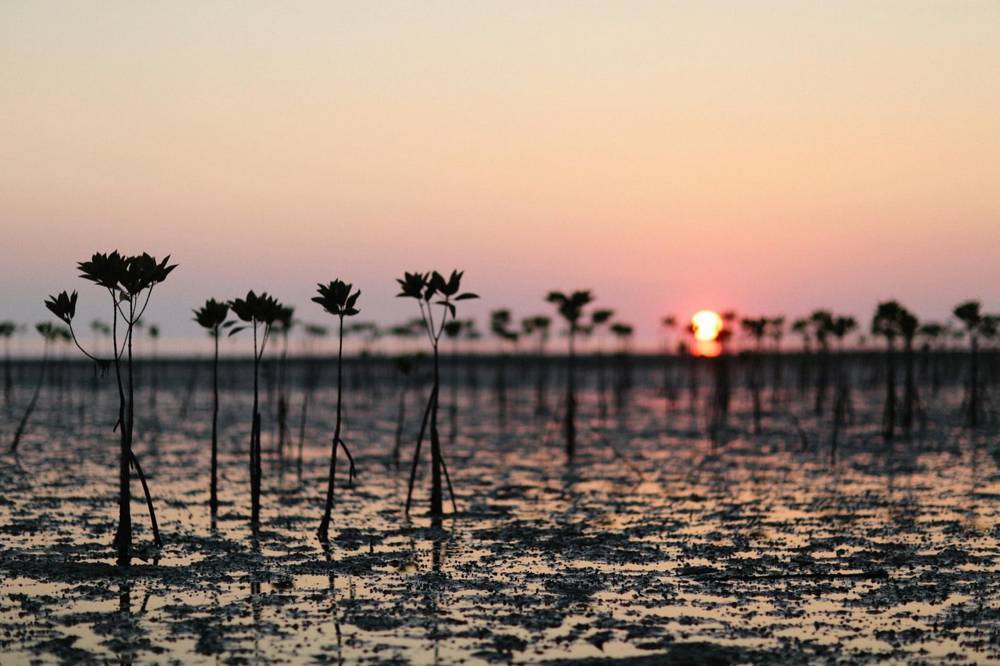
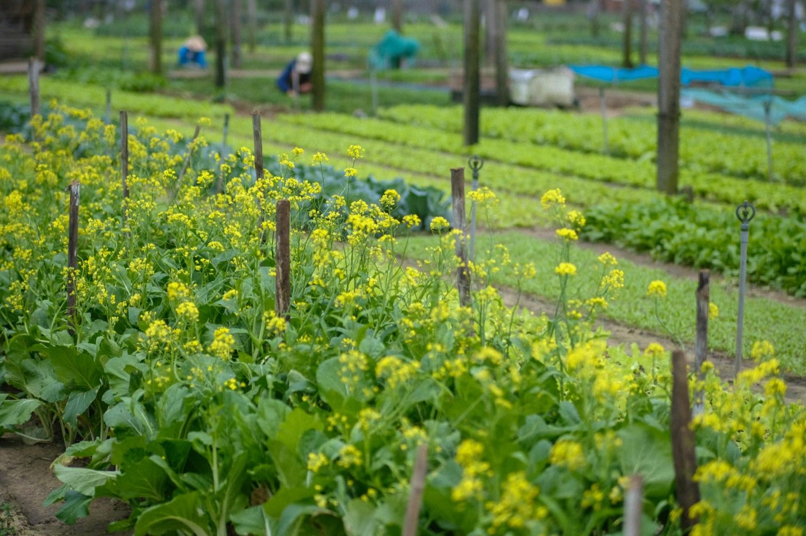
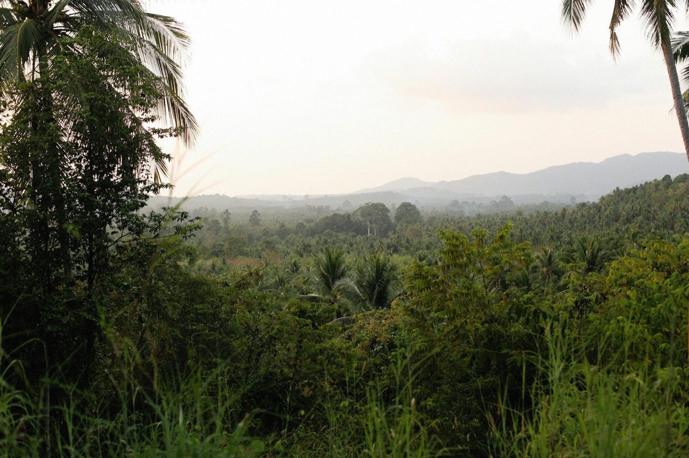
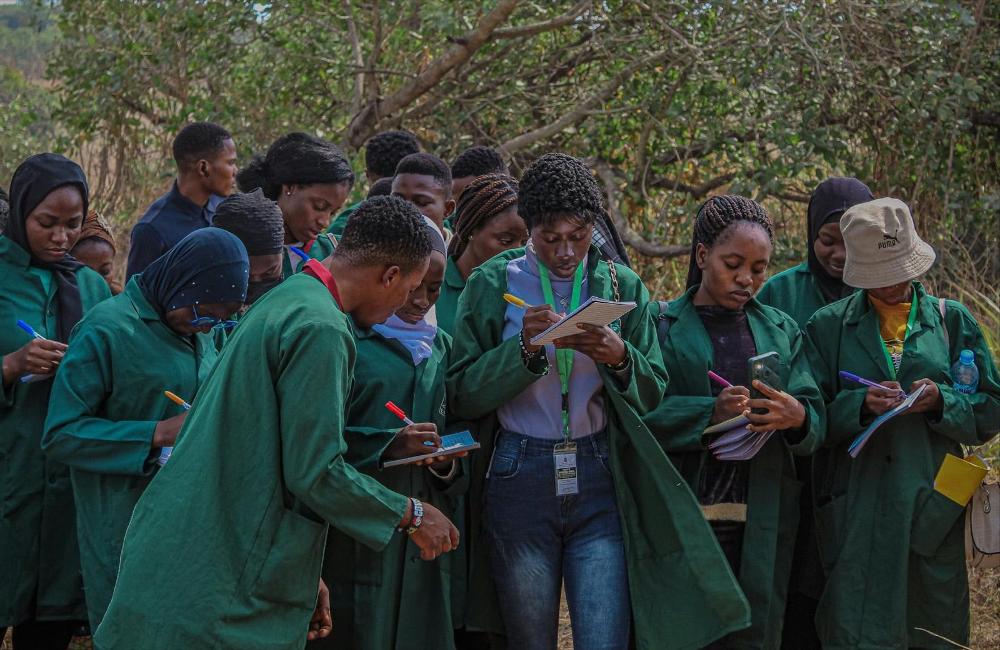

Youth-led · Guyana · Caribbean
Together, we regenerate.
Regenerating communities. Restoring ecosystems. Empowering the Caribbean's next generation — through one integrated programme of agriculture, health, youth, enterprise, and biodiversity.

Five pillars · One programme
Who we are
A conservation ensemble, not a single note
CYCLE — the Caribbean Youth Conservation Leaders Ensemble — is a youth-led civil society organisation based in Guyana. We work at the intersection of regenerative agriculture, biodiversity conservation, preventive healthcare, women's economic empowerment, and youth development.
Founded by young Caribbean professionals, CYCLE delivers integrated programmes through community demonstration farms, field-based ecological services, free health activations, and a dedicated media production unit — the Caribbean Diversity Hub.
Our work is guided by five values: regeneration over extraction; inclusion of women and youth as primary agents of change; evidence-based practice anchored in field research; radical transparency through open media; and regional solidarity.
Our mission
To empower women, youth, and smallholder farmers to adopt regenerative agricultural systems that increase food production, improve nutrition, and enhance economic resilience through integrated climate-smart agriculture, biodiversity conservation, and nutrition education.
Our vision
A Caribbean where biodiversity conservation drives economic resilience and agricultural innovation supports preventative healthcare for all communities.



The CYCLE loop
Our name describes how the work moves
Most organisations pick one of these four and call it a strategy. We think the value is in the turn.
Research & Publish
Field research at Pakuri and Moco Moco on how biodiversity, farming, and community health connect — published openly.
Empower Agripreneurs
Evidence becomes training, mentorship, and enterprise support for women, Indigenous, and youth farmers.
Showcase & Market
We take their farms public — marketing the produce while raising national awareness of what grows in Guyana's soil.
Shape Policy
Findings land in policy papers for climate-resilient agriculture, in Guyana and across the Caribbean.
Then the loop closes. Every policy win seeds deeper research, more agripreneurs, richer farms.
Five pillars
One programme, five entry points
Healthy ecosystems, nutritious food, empowered women, and informed youth are not separate mandates. They are inseparable dimensions of a community that can hold its own.
Climate-Smart Regenerative Agriculture
Demonstration farms as living laboratories for soil health, crop diversification, agroforestry, and water conservation — with technical training focused on smallholder farmers, especially women.
Nutrition & Preventive Healthcare
Free community health screenings co-delivered with agricultural field events, and nutrition workshops that connect farm outputs to household health.
Youth Empowerment & Environmental Education
Farm-based learning, school outreach, mentorship, and digital e-learning that build environmental literacy and leadership skills across the region.
Women's Economic Empowerment
Entrepreneurship training, value-chain mentorship, and microfinance facilitation supporting women-led agro-processing enterprises.
Biodiversity Conservation
Field biodiversity assessments, real-time species mapping, and pollinator gardens, buffer zones, and native planting embedded in every demonstration farm.
By 2030
The numbers we're willing to be held to
We publish these targets up front, before we've hit them, because an organisation that only reports the numbers it likes isn't reporting.
2,500+
People reached
500+
Farmers trained
40+
Women-led businesses
15
Biodiversity sites
Hold us to it.
Geographic reach
Five years. Four nations. One replicable framework.
- 2026
Guyana — programme launch: demonstration farms, field research, and community activations begin.
- 2028
Trinidad & Tobago and Jamaica — regional expansion of the documented model.
- 2029
Haiti — pilot launched with regional partners.
- 2030
Caribbean Replication Toolkit published — so the next organisation doesn't have to start where we started.
Programmes
How the work shows up on the ground
- Caribbean Diversity Hub (CDH) — mini-documentaries and environmental storytelling. Inaugural episode: “What the Wetland Gives Us.”
- Community Field Activations — co-located ecological literacy and free health screening events.
- Farm-Agro-Nutri-Research Programme — a five-year longitudinal study integrating biodiversity, nutrition, and agroecological data.
- Leadership Capacity Building Programme — a 12-month programme facilitated by senior professionals from regional and international institutions.
Partner with us
Fund it, research it, build it with us
Funders, corporate partners, research institutions, and fellow civil society organisations — we'd like to hear from you.
Address
Plot 90 Ideal Road, Waiakabra,
East Bank Demerara, Guyana
Media
Caribbean Diversity Hub (CDH) — YouTube
Privacy
This site sets no cookies and runs no trackers. Form data is stored only with your consent. Read the privacy notice.